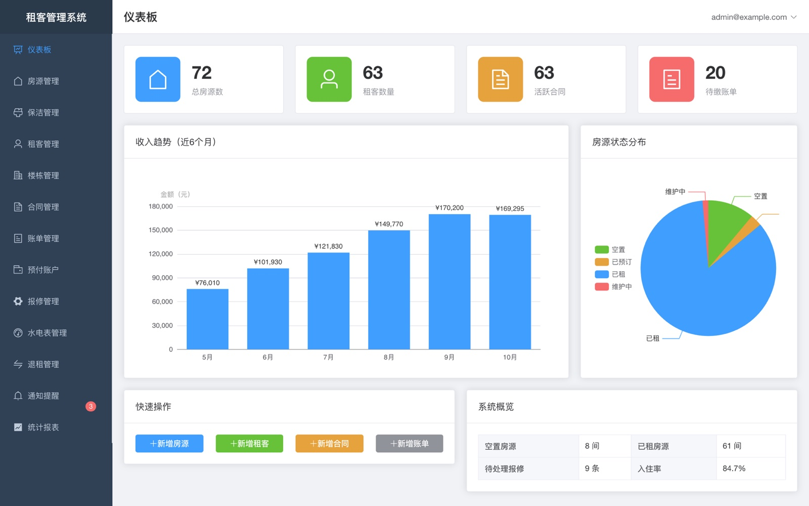
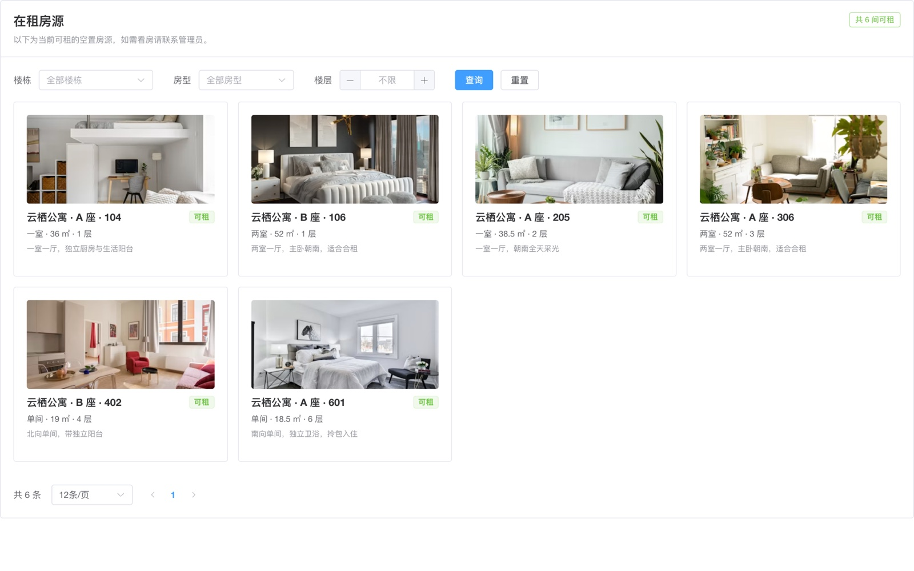
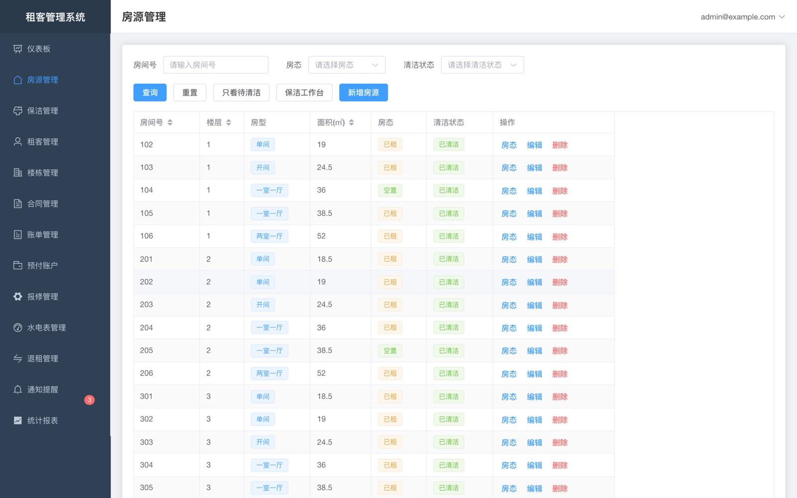
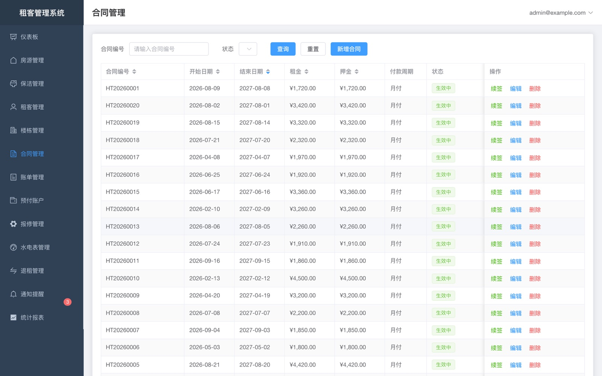
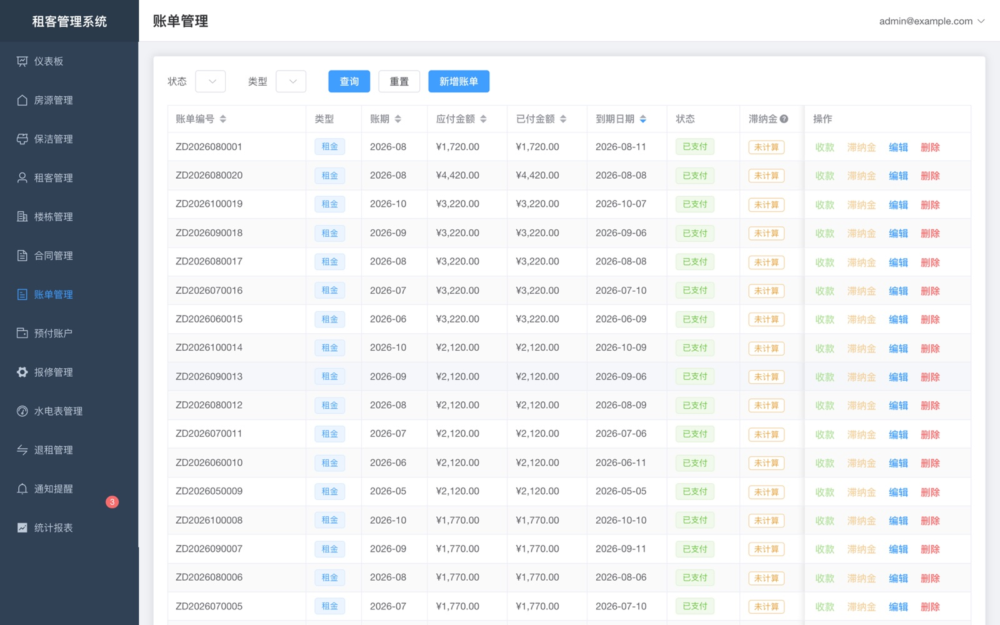
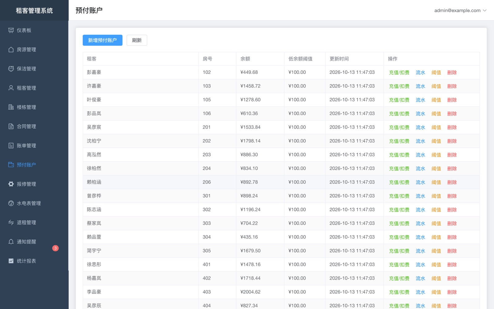
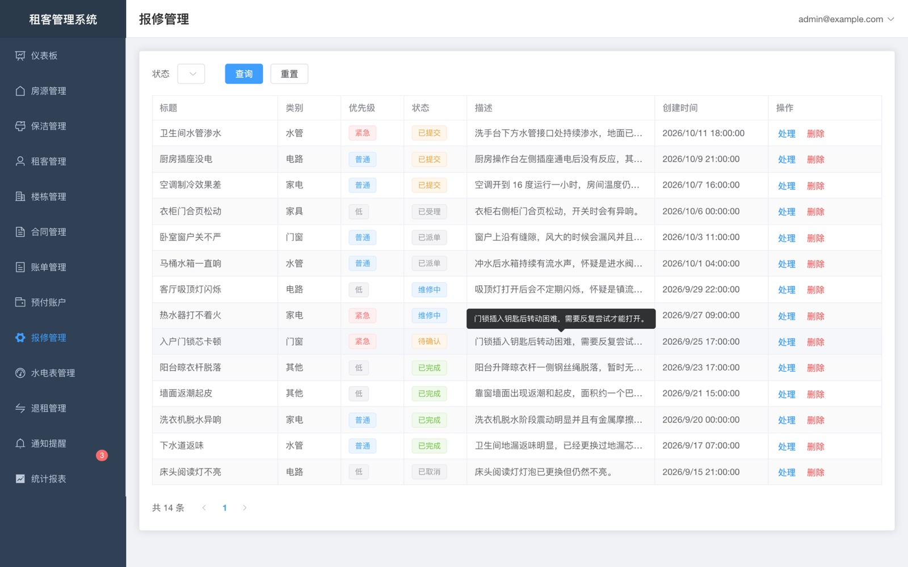
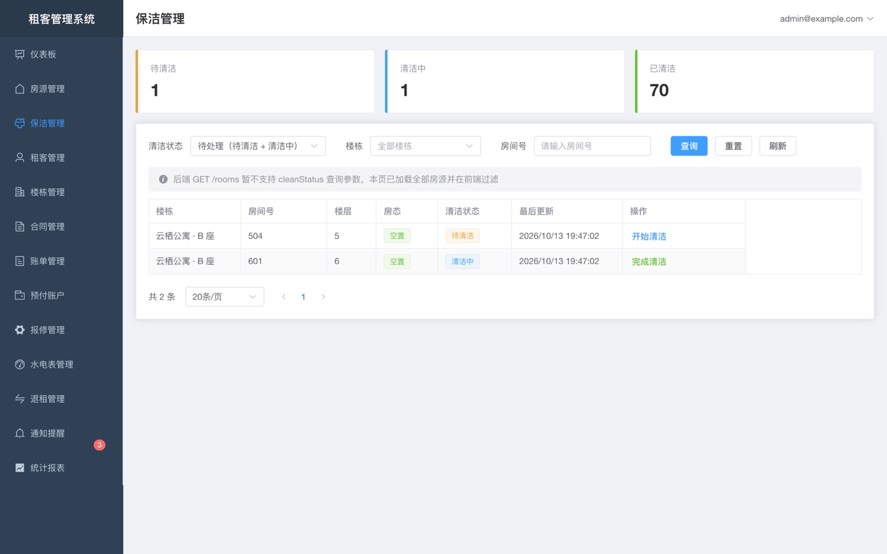
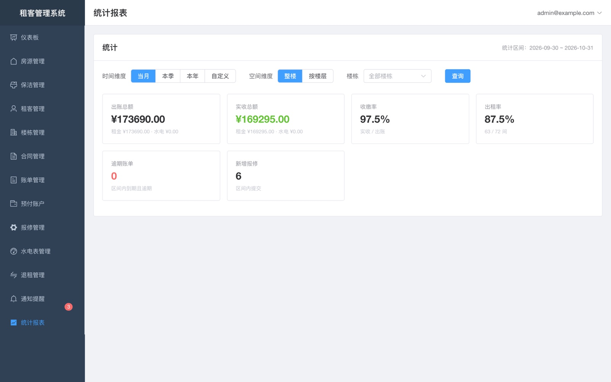
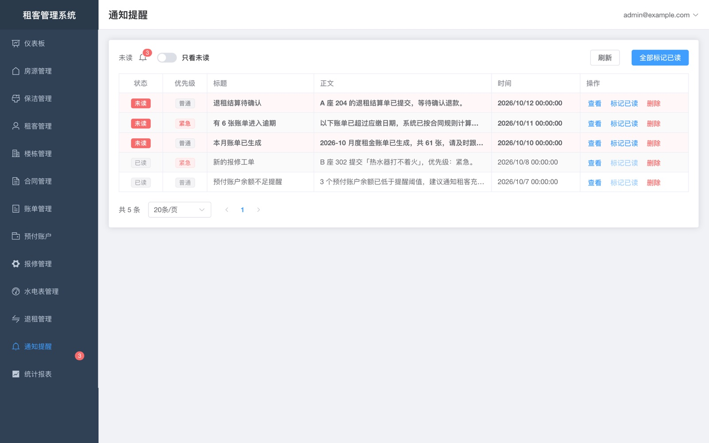

管理者
房态、合同、账单、水电、报修、退租、统计，一屏之内处理日常。
- 房源 4 种房态流转，改动带乐观锁
- 按楼栋隔离，跨楼栋数据默认不可见
- 每一次增删改都写审计日志
房东 · 二房东 · 公寓运营 租客 · 微信小程序
从签约到退租，房源、租客、合同、账单、水电、报修全程在线。房态自动流转，欠费自动提醒， 每一笔资金动作都留痕、可追溯、可对账。
不用再问房东「我这个月交了多少」。账单明细、账户余额、报修进度、合同内容， 打开微信就能看到——并且只看得到你自己的。


一套系统 · 三种角色
同一个数据库，三种角色各自只拿到该看的那部分。权限在服务端收口，前端藏起来不算数。
房态、合同、账单、水电、报修、退租、统计，一屏之内处理日常。
账单、余额、报修、合同，自助查完，少一轮来回沟通。
待清洁房间一张列表，接单、完成、拍照回传。
管理端能力
租客端能力
九个模块覆盖「房、人、钱、修」全链路，彼此打通：抄表会扣费，欠费会生账单，退租会算押金。
九个入口把你和房子之间的事情说清楚，不用翻聊天记录找历史账单。
空置 / 预订 / 已租 / 维修四态流转，清洁状态独立跟进，房间附件与设施一处维护。
租期、租金、押金、付款周期、滞纳金规则一次录入，支持续签与提前终止。
月度租金账单按期生成，收款登记支持现金 / 转账 / 微信 / 支付宝，交易号幂等防重复入账。
按合同规则算出建议金额，人工确认或减免后才入账，不自动扣租客的钱。
充值、扣费、退款、调整四类流水，余额与流水逐笔对齐，低于阈值自动提醒。
抄表即按单价扣费，扣完余额不足会自动生成补缴账单，差额补缴闭环。
已提交 → 已受理 → 已派单 → 维修中 → 待确认 → 已完成，全程状态可查，最多 9 张照片。
押金退还与扣除、租金按天数折算、水电余额退还，逐项列出、逐项可调。
待清洁列表与任务分派，出租率、实收、收缴率、逾期与报修统计一屏看完。
账期、金额、到期日、缴纳状态一目了然，已缴与待缴分开看。
水电预存余额，以及每一笔充值、扣费、退款的时间与事由。
拍照上传问题、选择类别与紧急程度，进度随处理实时更新。
租期、月租、押金、付款日与续签记录，随时可查。
新账单、逾期提醒、报修进展，进小程序就能看到未读。
无需登录即可浏览空置房源的照片、房型、面积与楼层。
结算项目逐条公开，扣了什么、退多少，写清楚。
标准 / 青春 / 关怀三套主题，字号可整体放大，长辈也能看清楚。
只能看到自己的账单、合同与工单，其他租客的任何信息都拿不到。
产品界面
下面每一张都来自真实运行的管理后台（演示数据，非效果图）。切换标签看各模块的列表： 筛选、分页、批量操作的位置都一致，学会一个就会用全部。








← 左右滑动查看完整界面
资金闭环
三条链路彼此咬合：账单收款、预付充值扣费、水电读数扣费。每个资金动作都带幂等键，重复提交不会重复入账。
你交了多少、扣了多少、还剩多少，系统里的数字和你手上的记录是同一个。
合同 → 月度账单 → 收款登记 → 状态联动
账单金额取自合同快照，收款后自动在待缴 / 部分缴 / 已缴清 / 逾期之间流转；重复的交易号会被拒绝。
充值 → 余额 → 扣费 → 余额不足提醒 → 生成补缴账单
水电走预存制，扣费必须发生在余额之内；余额触到阈值先提醒，不够的部分转成一张待缴账单。
抄表 → 用量 × 单价 → 自动扣费 → 差额补缴
本期读数减上期读数得到用量，乘单价后自动入流水，单价按生效日期留存历史，改价不影响旧账。
账期 · 金额 · 到期日 · 状态
哪个月、多少钱、什么时候到期、交没交，四个字段说完整，不用翻群聊。
充值 → 扣费 → 退款 → 余额
每一笔变动带时间、事由和变动后的余额，能一路推回到上一次充值。
押金 → 扣除项 → 折算租金 → 退款
扣了什么、按什么算，逐条列出来；退款走确认流程，不是一句话带过。
房态状态机
报修全流程
房态不是随手改的字段。签约、入住、退租、报修停用各有前置条件，改动写在同一张流转表里， 保洁接单与完成会直接回写房态。
提交后进入「已提交」，管理员受理、派单、维修，完成前还会回到你这里确认。 中间每一步的状态和照片都留在工单里。
燃气热水器完全打不着火，目前无法洗澡。
洗手台下方水管接口处持续渗水，地面已经有积水。
厨房操作台左侧插座通电后没有反应，其他插座正常。
报修工单：状态、类别、处理记录都在同一条里。
公开看房页
公开接口只放空置且已清洁的房间，展示照片、房型、面积、楼层与描述， 不含任何租客信息，也不需要登录。
把链接发给朋友或家人一起看，照片、面积、楼层、朝向都写清楚， 中意了再联系管理员约时间。
技术底座
一套可以自托管的系统：本地 Docker Compose 起数据库就能跑，也可以部署到自己的云主机。
项目现状
正在往生产试用推进，下面是已经跑通和还没做的部分，不藏也不夸大。
常见问题
答不上来的不写。下面是已经有确定答案的。
可以自己部署。开发环境用 Docker Compose 起 PostgreSQL 16 与 Redis；生产可以指向阿里云 RDS、
Redis 与 OSS，也可以整套放在自己的服务器上。数据库和 Redis 不需要对公网暴露，
由 Nginx 终止 TLS 后只转发 /api。
能跑，但边界写清楚：房源与房态状态机、租客与合同、账单收款、滞纳金与核销、预付账户流水、 水电读数扣费、报修工单、退租结算、通知、定时任务、统计报表、公开看房页、保洁两端都已跑通。 覆盖率门禁、真机验收和生产部署还在推进中，智能水电表、在线支付、短信、电子签章、 电子发票与存量数据导入都还没做——完整清单见上面的「项目现状」。
用微信小程序，不用装 App、不用记新密码。登录后每个人只看得到自己那部分：租客看自己的账单、
余额、报修和合同，保洁只看待清洁与清洁中的房间。关怀版主题会把字号整体放大，
长辈也能看清楚。
暂时不能批量导入，存量数据导入还在规划中。目前是在后台手工建立楼栋、房间与合同， 已经入住的租客按现有档案补录。如果你的存量规模较大，这件事需要在上线前单独排期。
系统按合同里约定的规则（宽限天数、按日比例或固定金额、封顶）算出建议金额， 需要人工确认或减免之后才会入账。它不会自动从租客账户扣钱，也不会自动生成一笔收款—— 钱怎么收、收多少，决定权始终在人手上。
服务端真的拦。角色守卫、按楼栋隔离、文件下载的归属校验都在后端；前端不显示只是顺手， 绕过前端直接调接口同样会被拒绝。每次增删改都会写审计日志，记录操作人、动作、 前后变化和来源 IP。